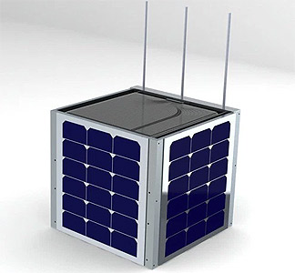

A SELF INTRODUCTION
A pleasure meeting everyone
I am Joel Rogers
Born in Madras, India
Home


Not the kind of guy who jumps at an oppurtunity of self-introduction
More about Myself
I am a third year student at IIT-M
Majoring in Electrical Engineering
Everything about Myself
Cats > Dogs
Sunsets > Sunrises
Star wars > Star Trek
PROJECTS
Dabbled in Computer Vision
A member of the CV group for a year
Tinkered around in object and feature detection for various projects funded by the club
Made an app that detects various facial features and adds snapchat like filters over the video feed
Hoping to launch a Satellite
Joint initiative with the Indian Space Program with a budget of over 40 million yen
Detects High Energy particles in the upper reaches of the atmosphere
Currently overseeing multiple teams as part of the project
Hypothesis verification of planetary incidents causing cosmic perturbations
Open access of data collected all over the world !!
Listening to the skies
Set up software and hardware chains for the Ground Station
Spent a summer trying to decode messages sent by amateur satellites
Coincidentally Cubesat 11 was the first decoded satellite
Coding Microcontrollers
Coded the control and data management system of the satellite
Extensively worked in device communication and resource management
WebApp for the Satellite
Designed a web app with Django
Extensively developed and tested both front and back end
Waiting for final testing at government facilities after which we hope to lauch it in a couple of months
Hobbies
Cinephile. Japanese movie scene yet unexplored.
Pleased to be in Japan, home to a few of my favorite authors - Haruki Murakami, Yukio Mishima.
Video Games

Especially, A lot of DotA 2
Farewell for now
Here's to one and half months of fun and growth !